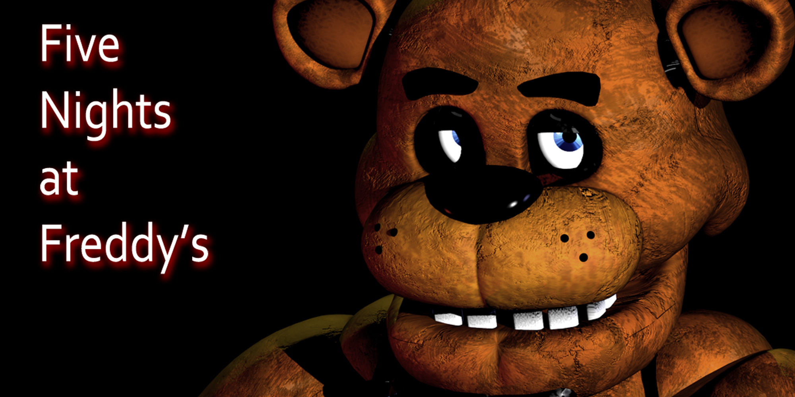
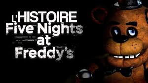

Five Nights At Freddy’s est une série de jeux d’horreur indépendants créée par Scott Cawthon et qui a débuté en 2014
Scott a eu l’idée de faire un jeu d’horreur suite aux mauvaises critiques de ses premiers jeux catholiques, surtout du jeu Chipper and Sons Lumber Co., où les personnages ressemblaient à des animatroniques sans âme qui observaient le joueur
Nous allons maintenant vous présenter l’histoire de Five Nights at Freddy’s
